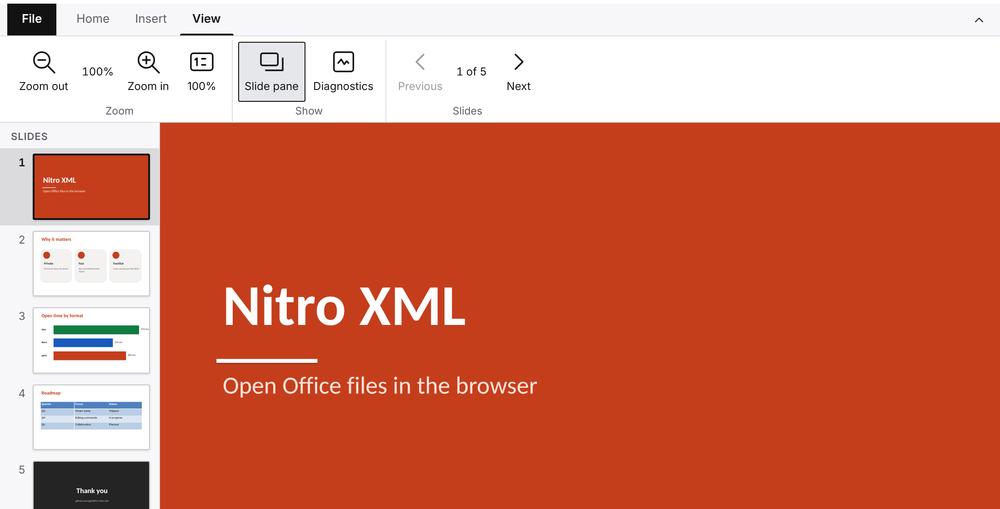
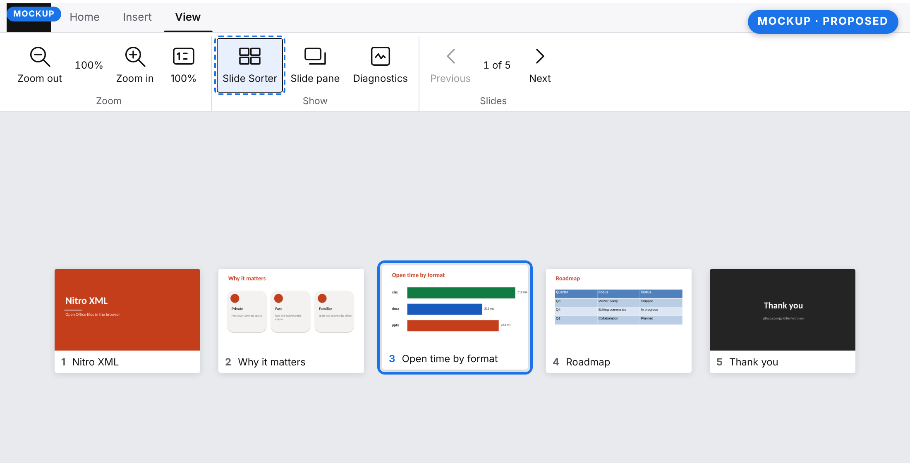
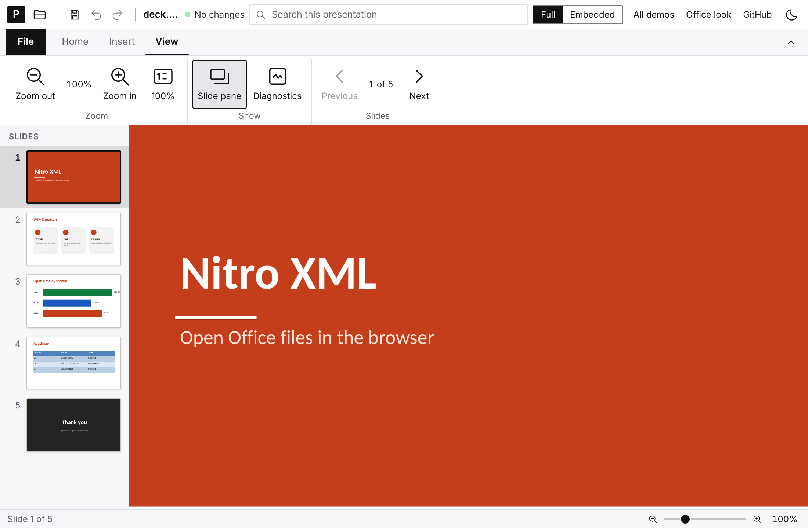
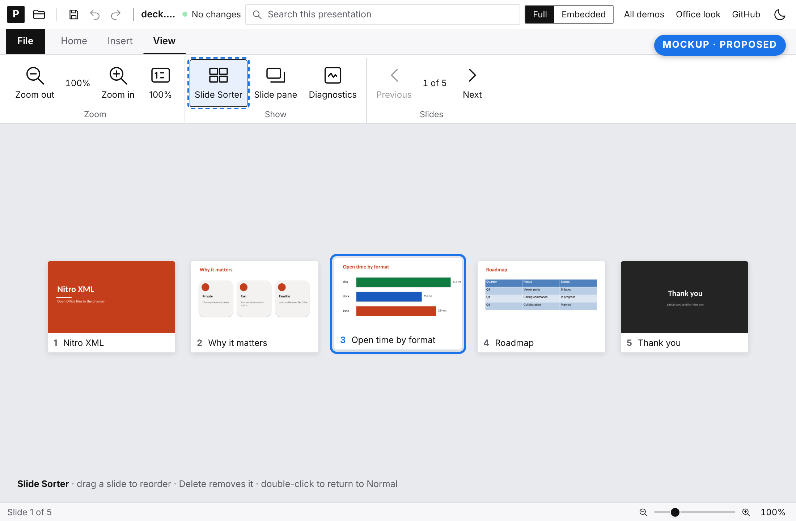

See every slide at once and drag to reorder, in Slide Sorter view
Approve: tap 👍 on the issue · Decline: tap 👎
Close-up of the change




Full screen


Today: View has Zoom, a Slide pane toggle and Previous/Next. The only way to see the deck is the narrow left rail in Normal view, so checking the flow or reordering several slides means a lot of scrolling and Move Slide Up/Down.


Mockup: View > Slide Sorter fills the canvas with a grid of every slide, with number and title. The current slide is outlined; drag a slide to reorder, double-click to return to Normal.
Tap an image to open it full size.
Why
PowerPoint's Slide Sorter is how people check the flow of a deck and reorder several slides at a glance. Nitro already paints thumbnails for the left rail and already has Move Slide Up/Down, but View has no sorter, so you only ever see one big slide plus a narrow strip. This is a layout of those thumbs, plus drag-to-reorder. It is not a slide show (that remains deferred).
Definition of done
- View > Slide Sorter (and a Normal button) switches the canvas to a grid of all slides at a readable size, with slide number and title; the current slide is outlined.
- Drag-and-drop reorders slides; Delete removes the selected slide; Ctrl+D duplicates it; each change is one undo step and survives save.
- Click selects; double-click, View > Normal or Escape returns to Normal on that slide; arrow keys and Previous/Next move the selection.
- Playwright tests cover open, reorder, delete, duplicate, undo, return to Normal and save; bundle-budget and all required checks green.
Approve: tap 👍 on the issue · Decline: tap 👎